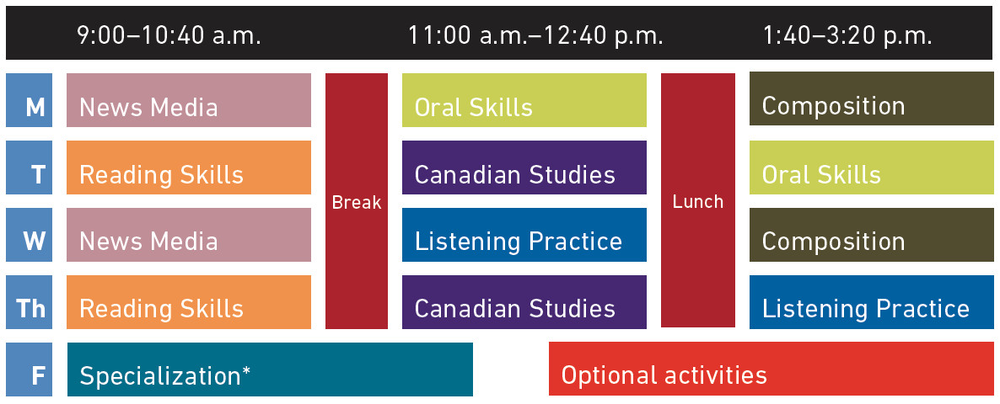

ELC's full-time programs give you the opportunity to study English in a university setting and build the skills you need for academic success, including the possibility of occasional field trips during class time.
Sample class schedule and curriculum
ELC → FIC → SFU
If IELTS score is higher than 4.5, students can move to University Transfer Program at FIC and complete UTP Stage I and II at FIC to enter the undergraduate degree at SFU. Note that the Stage II’s subject field is limited in several fields.
University Transfer Program at FIC -> year two undergraduate degree at SFU
If students don't have an English test score, or if their IELTS scores are lower than 4.5 when students apply to FIC, FIC can offer advice regarding specialist ESL colleges in Vancouver.
English as a Second Language (ESL) colleges